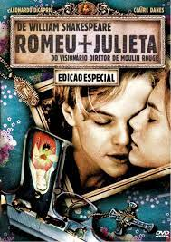
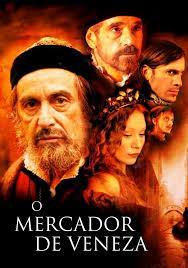
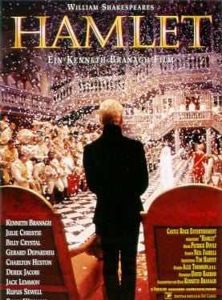
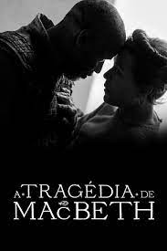

Além das peças transitarem entre o palco e o papel por meio da literatura,
também existem adaptações para as telas do cinema. Mesmo tendo licença poética, essas releituras mostram que
Shakespeare está presente nos dias atuais de diversas formas.
Veremos a seguir algumas adaptações de peças para as telonas:

Romeu e Julieta agora se passa na contemporainedade,
na fictícia Verona Beach. Famílias rivais tornam-se empresas rivais e os revólveres substituem as espadas,
mantendo ainda os versos originais.
Lançado em 1996 e estrelado por Leonardo DiCaprio como Romeu e
Claire Danes como Julieta.

O Mercador de Veneza recebe um longa metragem de
mesmo nome que conta a história de Bassânio, morador e Veneza no século XV. Este pede um empréstimo de três mil
ducados a seu amigo Antônio para cortejar Pórcia. Antônio, porém, não possuía o dinheiro já que suas mercadorias
ficam no exterior. Ele então pede ao amargurado judeu Shylock a quantia, que cede estabelecendo meio quilo da carne
de Antônio caso não o pagasse no prazo.
Lançado em 2004, o elenco conta com Joseph Fiennes como Bassânio, Jeremy Irons como Antônio, Lynn Collins como Pórcia
e Al Pacino como Shylock.

Hamlet veio às telas para mostrar a história do príncipe Hamlet
que se vê em meio a conspirações e corrupções após a morte de seu pai, o rei Hamlet. Se vendo obrigado a tomar uma atitude,
Hamlet então traça planos para desmascarar os traidores do reino.
Lançado em 1990, essa adaptação possui pouco mais de 4 horas de duração. Possui como integrantes do elenco
Kenneth Branagh como príncipe Hamlet, Kate Winslet como Ofélia, Derek Jacobi como Cláudio e Julie Christie como Gertrudes

A Tragédia de Macbeth se baseia na tragédia de mesmo nome de
Shakespeare e mostra a história de Macbeth quando três bruxas recitam uma profecia em que lorde Macbeth irá se tornar rei.
Então ele, com ajuda de sua esposa ambiciosa, planeja tomar o poder.
Lançado em 2021, a produção recente conta com Denzel Washington como Macbeth e Frances McDormand como Lady Macbeth.